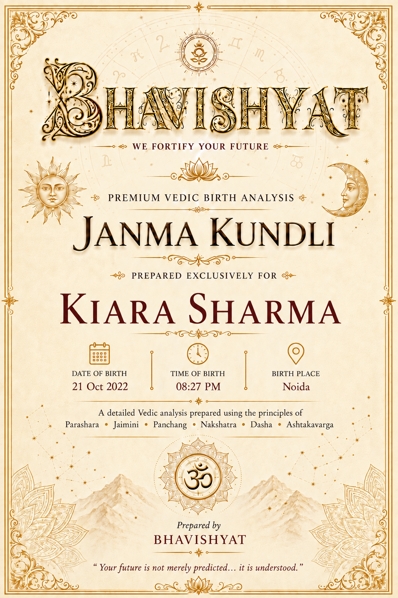
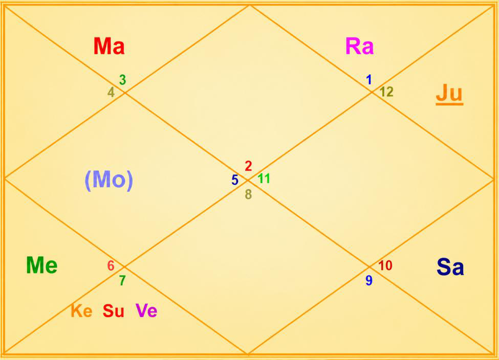

Janma Kundli • Ms. Kiara Sharma
Birth Details & Panchang
| Name | Ms. Kiara Sharma | Paksha | Krishna |
| Date of Birth | 21 October 2022 | Tithi | Dwadashi (12) |
| Time of Birth | 08:27 PM | Nakshatra | Purva Phalguni |
| Birth Place | Noida | Vaar | Friday |
| Longitude | 77°23' E | Yoga | Brahma |
| Latitude | 28°32' N | Karan | Kaulava |
| Ascendant | Taurus | Asc Lord | Venus |
| Tithi Lord | Mercury | Tithi Deity | Vishnu |
| Nakshatra Lord | Venus | Nakshatra Deity | Bhaga (Prosperity) |
| Yoga Deity | Ashwini Kumara | Karan Deity | Yama |
| Yogi | Mars | Duplicate Yogi | Venus |
| Abhiyogi | Ketu | Dagdha Rashi | Libra (7), Capricorn (10) |
Natal Chart (Rashi)

| Planet Distribution | Evenly Distributed — beginning of life more eventful than the latter part | ||
| Ascendant | Taurus (Vrishabha) | Moon / Sun Sign | Leo (Simha) / Libra (Tula) |
| Malefic | Moon, Jupiter | Shunya Nakshatra | Krittika, Mrigashira, Pushya, Magha |
| Maraka | Mars | Dasha Balance | 13Y 8M 4D |
| Badhaka | Saturn | Mangalik | No |
| Birth Dasha | Ve-Ma-Ra (1-4-5) | ||
Janma Kundli • Ms. Kiara Sharma
Favourable Influences
| Benefic Years | 19, 22, 26, 28, 31, 35, 37 | ||
| Favourable Days | Saturday, Wednesday, Sunday | ||
| Favourable Planets | Saturn, Mercury, Venus | ||
| Favourable Signs | Gemini (3), Cancer (4), Pisces (12) | ||
| Favourable Ratna | Diamond, Emerald | Favourable UpRatna | Opal, Peridot, Jade, Serpentine |
| Lucky Ratna | Neelam, Blue Topaz | Favourable Deity | Vishnu |
| Favourable Metal | Silver | Favourable Colour | White |
| Direction | South-East | Favourable Cereals | Rice |
| Favourable Items | Sugar Candy, Fragrance, Curd, White Sandal | ||
| Favourable Plant | Nagkesar (Ceylon Ironwood), Palash | ||
| Favourable Temple | Brihadeeswarar Temple (Tamil Nadu) | ||
Planets in Rashi Chart
| Planet | Lordship | Sign | Nakshatra | Nak. Lord | Nak. Count | Nav Tara | Char Karak |
|---|---|---|---|---|---|---|---|
| Sun | 4L | Libra (7) | Chitra | Mars | 4 N | 2 | Putrakarak (5H) |
| Moon | 3L | Leo (5) | Purva Phalguni | Venus | 1 N | 3 | Bhratrikaraka (3H) |
| Mars | 12L, 7L | Gemini (3) | Mrigashira | Mars | 22 N | 4 | DaraKarak (7H) |
| Mercury | 2L, 5L | Virgo (6) | Hasta | Moon | 3 N | 8 | Amatyakarak |
| Jupiter | 8L, 11L | Pisces (12) | Uttara Bhadrapada | Saturn | 16 N | 6 | Matrikarak (4H) |
| Venus | 1L, 6L | Libra (7) | Chitra | Mars | 4 N | 1 | Gnatikarak (6H) |
| Saturn | 9L, 10L | Capricorn (10) | Dhanishtha | Mars | 13 N | 7 | Atmakarak (Life) |
| Rahu | — | Aries (1) | Bharani | Venus | 19 N | 5 | — |
| Ketu | — | Libra (7) | Swati | Rahu | 5 N | 9 | — |
| Debilitated Planet(s) | — | Combust Planet(s) | Mercury, Venus |
| Retrograde Planet(s) | Jupiter, Saturn | ||
Sarvastakvarga & Houses
| Very Strong (35+) | — | ||
| Strong (31-35) | 2H, 3H, 4H, 9H | ||
| Above Average (28-30) | 1H, 10H, 11H | ||
| Below Average (24-27) | 5H, 6H, 7H, 12H | ||
| Weak (21-23) | 8H | ||
| Very Weak (<21) | — | ||
Janma Kundli • Ms. Kiara Sharma
Houses in Rashi Chart
| House | Sign | Planets | SAV | Lords | Aspect |
|---|---|---|---|---|---|
| 1H | Taurus (2) | — | 28 | — | — |
| 2H | Gemini (3) | Mars | 31 | 12L, 7L | Ketu |
| 3H | Cancer (4) | — | 32 | — | Jupiter |
| 4H | Leo (5) | Moon | 34 | 3L | Rahu |
| 5H | Virgo (6) | Mercury | 24 | 2L, 5L | Mars |
| 6H | Libra (7) | Sun, Venus, Ketu | 27 | 4L; 1L, 6L | Saturn |
| 7H | Scorpio (8) | — | 25 | — | Jupiter |
| 8H | Sagittarius (9) | — | 21 | — | Rahu |
| 9H | Capricorn (10) | Saturn | 33 | 9L, 10L | Mars |
| 10H | Aquarius (11) | — | 29 | — | Ketu |
| 11H | Pisces (12) | Jupiter | 29 | 8L, 11L | Saturn |
| 12H | Aries (1) | Rahu | 24 | — | — |
Bhinnashtak Varga (BAV)
| Sign | Sa | Ju | Ma | Su | Ve | Me | Mo | Ra |
|---|---|---|---|---|---|---|---|---|
| 2 | 5 | 5 | 2 | 3 | 6 | 4 | 3 | 5 |
| 3 | 3 | 8 | 2 | 4 | 3 | 6 | 5 | 1 |
| 4 | 4 | 4 | 5 | 6 | 5 | 3 | 5 | 4 |
| 5 | 6 | 3 | 4 | 5 | 6 | 6 | 4 | 6 |
| 6 | 1 | 5 | 3 | 3 | 5 | 5 | 2 | 2 |
| 7 | 4 | 4 | 3 | 4 | 4 | 4 | 4 | 6 |
| 8 | 3 | 3 | 2 | 4 | 6 | 4 | 3 | 2 |
| 9 | 0 | 6 | 3 | 1 | 4 | 3 | 4 | 4 |
| 10 | 3 | 5 | 5 | 6 | 4 | 6 | 4 | 1 |
| 11 | 3 | 4 | 4 | 4 | 3 | 7 | 4 | 2 |
| 12 | 4 | 5 | 4 | 3 | 3 | 4 | 6 | 5 |
| 1 | 3 | 4 | 2 | 5 | 3 | 2 | 5 | 5 |
Janma Kundli • Ms. Kiara Sharma
Vimshottari Dasha
Maha Dasha
| Dasha Lord | From | To |
|---|---|---|
| Venus | 25-Jul-2016 | 25-Jul-2036 |
| Sun | 25-Jul-2036 | 25-Jul-2042 |
| Moon | 25-Jul-2042 | 24-Jul-2052 |
| Mars | 24-Jul-2052 | 25-Jul-2059 |
| Rahu | 25-Jul-2059 | 24-Jul-2077 |
| Jupiter | 24-Jul-2077 | 24-Jul-2093 |
| Saturn | 24-Jul-2093 | 25-Jul-2112 |
| Mercury | 25-Jul-2112 | 25-Jul-2129 |
| Ketu | 25-Jul-2129 | 25-Jul-2136 |
Antar Dasha (Venus Maha Dasha)
| AD Lord | From | To |
|---|---|---|
| Venus | 25-Jul-2016 | 24-Nov-2019 |
| Sun | 24-Nov-2019 | 23-Nov-2020 |
| Moon | 23-Nov-2020 | 25-Jul-2022 |
| Mars | 25-Jul-2022 | 24-Sep-2023 |
| Rahu | 24-Sep-2023 | 24-Sep-2026 |
| Jupiter | 24-Sep-2026 | 25-May-2029 |
| Saturn | 25-May-2029 | 25-Jul-2032 |
| Mercury | 25-Jul-2032 | 25-May-2035 |
| Ketu | 25-May-2035 | 25-Jul-2036 |
Pratyantar Dasha (Rahu Antar Dasha)
| P. Dasha | From | To |
|---|---|---|
| Mercury | 20-Jan-2025 | 24-Jun-2025 |
| Ketu | 24-Jun-2025 | 27-Aug-2025 |
| Venus | 27-Aug-2025 | 26-Feb-2026 |
| Sun | 26-Feb-2026 | 22-Apr-2026 |
| Moon | 22-Apr-2026 | 22-Jul-2026 |
| Mars | 22-Jul-2026 | 24-Sep-2026 |
| Jupiter | 24-Sep-2026 | 01-Feb-2027 |
| Saturn | 01-Feb-2027 | 05-Jul-2027 |
| Mercury | 05-Jul-2027 | 20-Nov-2027 |
| Ketu | 20-Nov-2027 | 16-Jan-2028 |
Janma Kundli • Ms. Kiara Sharma
Nav Tara Sequence
| Planet | Chara Karak | House | Lordship | Strength | Nakshatra | Lord | Placement |
|---|---|---|---|---|---|---|---|
| Venus | Gnatikarak (6H) | 6H | 1L, 6L | Below Avg (24-27) | Chitra | Mars | 2H |
| Sun | Putrakarak (5H) | 6H | 4L | Below Avg (24-27) | Chitra | Mars | 2H |
| Moon | Bhratrikaraka (3H) | 4H | 3L | Strong (31-35) | Purva Phalguni | Venus | 6H |
| Mars | DaraKarak (7H) | 2H | 12L, 7L | Strong (31-35) | Mrigashira | Mars | 2H |
| Rahu | — | 12H | — | Below Avg (24-27) | Bharani | Venus | 6H |
| Jupiter | Matrikarak (4H) | 11H | 8L, 11L | Above Avg (28-30) | Uttara Bhadrapada | Saturn | 9H |
| Saturn | Atmakarak (Life) | 9H | 9L, 10L | Strong (31-35) | Dhanishtha | Mars | 2H |
| Mercury | Amatyakarak | 5H | 2L, 5L | Below Avg (24-27) | Hasta | Moon | 4H |
| Ketu | — | 6H | — | Below Avg (24-27) | Swati | Rahu | 12H |
Birth Chart Nav Tara Chakra
| Venus (Janam) | 1 | Moon | 10 | 19 | Rahu | |
| Sun (Sampat) | 2 | 11 | 20 | |||
| Moon (Vipat) | 3 | Mercury | 12 | 21 | ||
| Mars (Kshem) | 4 | Sun, Venus | 13 | Saturn | 22 | Mars |
| Rahu (Pratyari) | 5 | Ketu | 14 | 23 | ||
| Jupiter (Sadhak) | 6 | 15 | 24 | |||
| Saturn (Nidhan) | 7 | 16 | Jupiter | 25 | ||
| Mercury (Mitra) | 8 | 17 | 26 | |||
| Ketu (Ati Mitra) | 9 | 18 | 27 |
Important Saturn Transits
| 1st Sade Sati | 13 Jul 2034 – 26 Sep 2041 | ||
| 2nd Sade Sati | 24 Aug 2063 – 04 Nov 2070 | ||
| 3rd Sade Sati | 02 Jul 2093 – 16 Sep 2100 | ||
| Kantak Shani | 27 Aug 2036 – 22 Oct 2038; 05 Apr 2039 – 13 Jul 2039 | ||
Janma Kundli • Ms. Kiara Sharma
Other Important Transits
| Type | Planet | House | SAV | From | To |
|---|---|---|---|---|---|
| Good | Saturn | 10H, 11H | 29 | 17 Jan 2023 | 02 Jun 2027 |
| Jupiter | 2H, 3H | 31, 32 | 14 May 2025 | 30 Oct 2026 | |
| Jupiter | 5H | 24 | 26 Jun 2027 | 26 Nov 2027 | |
| Challenging | Saturn | 12H | 24 | 03 Jun 2027 | 20 Oct 2027 |
| Saturn | 12H | 24 | 23 Feb 2028 | 08 Aug 2029 | |
| Rahu | 8H | 21 | 23 Jun 2028 | 11 Jan 2030 | |
| Ketu | 4H | 34 | 18 May 2025 | 05 Dec 2026 |
Lal Kitab Birth Chart
| HN | Rashi | Planets | Varshphal Yr 4 21 Oct 2025 – 20 Oct 2026 |
Varshphal Yr 5 21 Oct 2026 – 20 Oct 2027 |
|---|---|---|---|---|
| 1 | Taurus (2) | — | Moon | Mercury |
| 2 | Gemini (3) | Mars | Jupiter | — |
| 3 | Cancer (4) | — | — | Mars |
| 4 | Leo (5) | Moon | — | Moon |
| 5 | Virgo (6) | Mercury | Saturn | Sun, Venus, Ketu |
| 6 | Libra (7) | Sun, Venus, Ketu | — | — |
| 7 | Scorpio (8) | — | — | Jupiter |
| 8 | Sagittarius (9) | — | Mars | — |
| 9 | Capricorn (10) | Saturn | Sun, Venus, Ketu | — |
| 10 | Aquarius (11) | — | Mercury | Rahu |
| 11 | Pisces (12) | Jupiter | — | — |
| 12 | Aries (1) | Rahu | Rahu | Saturn |
Janma Kundli • Ms. Kiara Sharma
Part B — Panchang Insights
| Tithi — Krishna Dwadashi | Favours prosperity and well-being; can give passive-aggression, controlling nature, escapism and dependency. Makes the native active and passionate — good at planning and scheming. Wants to dominate and overshadow. Should be careful of attachment and self-sacrifice for charity and welfare of others. Avoiding laziness is a good lifestyle remedy. Worshipping Lord Vishnu enhances the positive energy of this Tithi and ensures riches and wealth. Offer Tulsi to Lord Vishnu. |
| Moon | The natal Moon is not Paksha Bali — around 25% luminous. Advisable for the native to perform Ganga Snan. |
| Vaar — Friday | Gives comfort, luxury and opulence. Makes the native charming, artistic and sociable. Chanting Sri Suktam and worshipping Goddess Parvati is advised if there is problem in family or financial wastage / imbalance. |
| Nakshatra — Purva Phalguni | Likes an independent working style; fond of travelling; dedicated towards work; honest; strives for fame and power. Career switches more often. Good communication skills; interest in music and art; favours multiple sources of income. People may perceive the native as arrogant. |
| Yoga — Brahma | Favours specialisation in a subject-matter, skilled hands and healing energy. |
| Dagdha Rashi — 7, 10 | Visit a Shani temple and light a mustard oil lamp to pacify Saturn. |
Janma Kundli • Ms. Kiara Sharma
Rashi Chart Overview
| Planet Distribution | As per planetary distribution in the Rashi chart, the beginning part of life would be more eventful than the latter part. |
| Kal Sarp | There is no Kal Sarpa Dosh in the chart. |
Nature, Personality & Appearance — Ascendant Taurus
| Core Nature | Stable life; practical, patient, reliable, artistic, loyal, hardworking and dependable. Good with money; focus on wealth; comfort-loving; values beauty, luxury and food. |
| Physical Features | Broad forehead, beautiful and attractive face, large eyes and ears, wheatish complexion. |
| Lifestyle | Loves music, good food, gardens and beautiful surroundings. Prefers stability over sudden changes. Drawn to finance, arts or agriculture. Focus on comfort and security; partnerships usually bring wealth. |
| More About Ascendant | Loving nature; fond of beauty, music and colour. Fond of ease, love, luxury and good food. If not listened to attentively, gets very furious. Physical powers and mental endurance are noteworthy. Straightforward and natural. Amasses wealth and spends cautiously. Self-reliant with her own principles. Lucky; spends on ornaments, gardening and horticulture. Practical in material affairs. Not easily aggressive but extremely fierce when provoked. Irritated by insects or specific dislikes. |
| Weakness | Stubborn, resistant to change, slow to adapt, indulgent and materialistic. |
Moon Sign — Leo
| Emotional Nature | Royal, confident, proud, generous and a natural leader. Loves attention, power and creativity. Ambitious, charismatic, leadership-driven, brave, authoritative, inspiring and dominant. Can be attention-seeking, egoistic, stubborn and dramatic. Drawn to politics, entertainment and business. Recognition-oriented with strong wealth yogas; loves luxury and the spotlight; dislikes being ignored. Voracious reader. Fond of pleasure and luxury even with limited resources. East direction is auspicious for travel or work. |
Janma Kundli • Ms. Kiara Sharma
Impact of Planetary Placements
- Burnt sign on the hand. Courageous and aggressive nature. No Mangalik dosha in the chart. Good for analytical jobs, military / police, sportsperson, dentist, medicine etc.
- Good for health, wealth and education. Mom's baby; loves vehicles (fond of cars); multiple vehicle and house yoga. Extravagant nature. People share emotional pain, cries and problems with her. Gets support from government, officials and the public. Courageous; does not like warm / hot weather. Usually a waterbody nearby the house — pond, river or swimming pool; likes to spend time near waterbodies. Much emotional with home, native place and mother.
- Good for wealth and property. Good yoga for restaurant / food-related business. Supports siblings; behaves like the elder in the family. Fast, sharp or harsh speech. Kitchen always operational in the house — guests keep coming regularly. Be careful of inviting troubles from own speech. Gums / teeth disease or issues likely.
- Multiple income sources — knows multiple ways of earning money. Good at communication; good consultant; good financial learning. Creative, sharp-minded and jovial in nature. Mantra siddhi; beware of negative thoughts.
- Wealth yoga, name and fame. Friend circle of learned people. Loves to share; spendthrift. Can earn through commission work.
- God's blessings; good wealth. Critical of the opposite gender.
- Long-distance travel; stable relationship. Good for spiritual travel. Multiple property yoga — makes at least three properties.
Janma Kundli • Ms. Kiara Sharma
Impact of Planetary Placements (contd.)
- Disturbed sleep; likes to stay awake at night. Lots of plans and travels. Foreign income yoga; sudden gains; out-of-the-box thinking; competition killer.
- May get loss through servants or service providers. Defeats enemies. Danger through reptiles and small animals. Eye trouble. Not good for maternal uncle or maternal relatives. Cuts debt or loan but gives health issues such as bones and leg-pain related issues. May not complete a job — leaves in between and switches profession.
- Mentally challenged person either in the family or nearby the residence.
- Sharp-minded; good for wealth, trade and negotiation. Healthy and quick at learning. Practical approach in life; loves to take challenges.
- Yoga for prolonged health issues to mother or some family member.
Planetary Combinations
- Surya Grahan in the Rashi chart. Differences with father in the relevant Dasha. Problems from government / authorities; problems with boss or superiors. Likelihood of wastage of money in legal matters in the relevant Dasha.
- Workaholic nature; focus on knowledge and materialistic things.
- Feed 100 kg grass to cows on Makar Sankranti (14 Jan) every year.
Janma Kundli • Ms. Kiara Sharma
12 Houses of Rashi Chart
- Big eyes; fond of good food, comfort and luxury. Stable personality and reliable nature. Attractive personality; happy in her own world. Slow walk and laziness in daily life; good physical strength; family-oriented. Prone to nasal (breathing) problems.
- Materialistic; chatterbox in the family — talks a lot. Bad eating habits (experiments with food). Skill for accumulating wealth.
- Park, playground, school or waterbody near residence. Good writing skills. Attached with surroundings and neighbourhood. Frequent travels.
- Proud of own home and vehicle; strong and influential personality to mother. Loves to feed people.
- Good at analysing — analysing people or situations like a hobby. Obsession for perfection; mind always on how it can be better or improved.
- Good at handling conflicts, disputes and fights. Good for counselling others. May work in finance, beauty and personal care etc.
- Prone to cheating in business or work partner from team members. Be careful in partnership matters.
- Luck favours in difficult times — transformation for good. Strict belief system. Lucky in inheritance, insurance, unearned money and shared wealth.
- Less expressive nature to father. Difficult to understand religious practices; gives struggles to father in relevant transit / Dasha. Struggle with father or in his life. Dedicated to father / guru but needs much effort for higher knowledge. Father of hard-working nature or extremely lazy (not in-between). Delays observed in support of luck / fortune.
Sarvashtakvarga — Yearly Outlook
| Challenging Years | 18, 29 | ||
| Good Months of the Year | January – February, April – May, July – September | ||
| Auspicious Months (ceremony, puja etc.) | June – July | ||
| Challenging Months of the Year | December – January, August – October | ||
| Favourable for Starting New Education | June – July | ||
| Lucky People for Native | Gemini (3), Leo (5), Capricorn (10), Pisces (12) | ||
| Unfavourable People for Native | Virgo (6) | ||
| Aptitude | Good analytical skills; wealth; property; ability to win competitions; yoga for high success in profession; attachment with native place / country | ||
| Favourable Direction for Opening a Bank Account | North of birth place / residence | ||
| Wealth-Giving Dasha / Antardasha | Rahu, Moon, Mars, Ketu, Mercury, Jupiter | ||
| Key Growth Window | Jupiter Antar Dasha (Sep 2026 – May 2029) — favourable for gain of wealth in the family | ||
Janma Kundli • Ms. Kiara Sharma
12 Houses of Rashi Chart (contd.)
- Working for large groups or organisations. High desire for career; good for career; may achieve a lot in professional life. Surrounded by group / friends at workplace. Very innovative at workplace.
- Losses prone due to friend or social circle. Company of spiritual people. Secretive about earnings / gains and friends. Joins a spiritual or meditative group in life.
- Focused on investments — be it money or time. Likes to spend time alone, meditation etc.
- Focus on dispute, health issues or services-related work. Always keeps improving self. Competitive spirit; likes to be alone. Can leave things / people easily. Good for service sector. Ability to put lots of effort. Affects confidence of the native.
- Wealth yoga. Earnings through speculation, hobby, consultancy and knowledge-based work. Supports good wealth and resources (especially during Mercury Dasha).
- Mother is strong and dominant-natured. Neighbourhood impacts peace of mind. Frequent changes of residence; property-related issues.
- Lives away from birthplace; change of residence frequently. May like to reside in a small house or flat. Prone to health issues to self / mother during Sun Dasha and bad transit.
- Good ability of healing (fast) and resilience. Good for education, intelligence and vision (understanding). Creative ability.
- Strong competitive spirit; very good for service sector; saves from health challenges. Strong willpower; supportive in profession. Yoga for relationship challenges in maternal family (divorce etc.).
Janma Kundli • Ms. Kiara Sharma
12 Houses of Rashi Chart (contd.)
- Earnings through collaboration, diplomacy and partnership.
- Earnings through hidden sources, commission work and losses of others. Sudden increase or decrease in earnings in the relevant Dasha.
- Luck favours the native ultimately. Long travel / pilgrimage favours luck in profession / career.
- Yogkarak Saturn will give rise in profession. Saturn Dasha / Antar Dasha supports career growth. Pilgrimage, religious practices and regular donation support profession and nature.
- Supports fulfilment of desires, earnings, innovation skills and the ability to solve problems in a unique way.
- Gain through investments. Potential for earning through foreign client / MNC / overseas, import-export work, medical or legal field.
Karmic Remedies — Lal Kitab
- Throw away torn clothes. Avoid wastage of water; get water leakage repaired immediately, if any.
- Having meals in the kitchen is favourable.
- Avoid Tulsi and Money Plant (remove them).
- Wear a gold chain. Donate food to birds.
- Never clutter the roof or balcony of the house.
- Avoid blue bed sheet and blue footwear — use red ones.
- Avoid donation in the evening; make donation at noon.
- May recite Narasimha Kavach Stotra.
- Never gift pens, pencils, stationery or mobile phones to anyone.
- Throw away copper utensils. Keep the bed in good condition — not dirty or broken.
- Don't reuse old items in the construction of / in a new house.
Abbreviations
A Sacred Dedication
With Love & Blessings
for Ms. Kiara Sharma's journey ahead
अनन्याश्चिन्तयन्तो मां ये जनाः पर्युपासते।
तेषां नित्याभियुक्तानां योगक्षेमं वहाम्यहम्॥ २२॥
जो लोग अनन्य भाव से मेरा चिन्तन करते हुए मेरी उपासना करते हैं, उन नित्य मेरे में युक्त रहने वाले भक्तों का योगक्षेम मैं स्वयं वहन करता हूँ।
"Those who always worship Me with exclusive devotion, meditating on My transcendental form — to them I carry what they lack and preserve what they have."
— Bhagavad Gita, Chapter 9, Verse 22
May Ms. Kiara Sharma grow under the quiet shelter of this promise — that devotion itself becomes provision. May her Taurus steadiness and Leo radiance find their true home in faith, and may Lord Vishnu carry her yoga-kshema through every season of her young and luminous life.